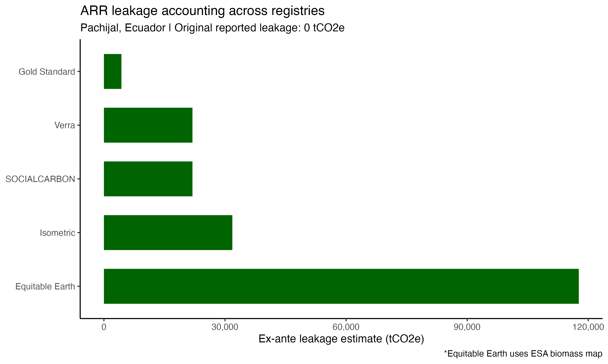

Executive summary
Leakage is among the more challenging components of carbon accounting for ARR projects. Although increases in forest carbon stocks can be estimated within a defined project boundary, the consequences of displaced agricultural production, grazing, or resource extraction are considerably more difficult to observe and attribute.
When a reforestation project displaces livestock production, what happens to the animals? Are they relocated onto existing pasture, accommodated through greater agricultural productivity, removed from production, or shifted onto newly cleared forest land? The answer determines whether the project causes additional greenhouse gas emissions outside its boundary. Unfortunately, that answer is rarely known when a project is being designed.
Carbon crediting methodologies address this uncertainty in substantially different ways. Some estimate how commodity markets respond to reduced production. Others use evidence of the activities displaced and the carbon stocks potentially affected elsewhere. These differences extend to the evidence developers must provide, the assumptions they may adopt, and whether leakage estimates are subsequently monitored and revised.
This guide examines five ARR leakage frameworks:
- Verra VM0047, incorporating VMD0054 v1.1
- Isometric Reforestation Protocol v1.2, with consideration of its proposed Market Leakage Module v1.0
- SOCIALCARBON SCM0009 and SCD0002 v1.0
- Gold Standard Afforestation/Reforestation Methodology v2.1
- Equitable Earth M001 v1.2
Using a native forest restoration project in Ecuador, I explore how the same underlying grazing displacement can produce substantially different ex-ante leakage estimates.
The central finding is that differences in leakage accounting arise not only from how much activity is displaced, but from how methodologies translate displacement into land-use change, what carbon stocks they consider at risk, and what evidence is sufficient to support reductions in leakage.
1. Understanding leakage in ARR projects
Leakage refers to greenhouse gas emissions occurring outside a project's accounting boundary as a consequence of project activities. For ARR projects, leakage most commonly arises when reforestation replaces an existing land use that was producing agricultural commodities, livestock, fuelwood, or other resources.
Two mechanisms are particularly important.
Activity-shifting leakage
Activity-shifting occurs when land-use activities move elsewhere because they can no longer continue within the project area.
For example, cattle previously grazing land selected for reforestation may relocate to another property. If their relocation requires forest clearing, the resulting loss of forest carbon is attributable, at least in part, to the project.
However, relocation does not necessarily imply forest clearing. Displaced livestock may be accommodated by existing pasture without any additional loss of forest carbon.
The challenge is determining where activities move, whether receiving land has adequate carrying capacity, and whether land conversion would have occurred in the absence of the project.
Market leakage
Market leakage occurs when a project's reduction in commodity production affects market supply and induces increased production elsewhere.
For example, if an ARR project eliminates cattle production, the market may respond through some combination of reduced consumption, greater productivity on existing agricultural land, and expansion onto new land.
Only a portion of displaced production may therefore result in additional agricultural land conversion.
Quantifying market leakage requires assumptions about commodity supply and demand, productivity, land expansion, and the carbon stocks associated with converted land.
The ex-ante problem
Leakage is difficult to quantify retrospectively, but forecasting it introduces additional uncertainty.
At project initiation, developers typically lack direct observations of future commodity-market responses, future livestock relocation, or additional forest clearing attributable to their project.
Methodologies must therefore translate limited baseline evidence into a forecast of potential emissions.
That translation is where different accounting frameworks begin to diverge.
2. Five approaches to estimating ARR leakage
Although all five methodologies ultimately express leakage in tonnes of CO₂ equivalent (tCO₂e), their underlying calculations differ considerably.
Verra: Commodity displacement and modeled land conversion
Verra's VMD0054 estimates leakage associated with displaced agricultural and fuelwood production.
In simplified form, the process is:
- Estimate baseline commodity production that would have occurred without the project.
- Subtract production retained within the project and eligible additional production from leakage mitigation activities.
- Estimate how much foregone production is replaced elsewhere.
- Determine what share of replacement production requires newly converted land.
- Estimate carbon-stock losses resulting from that conversion.
The resulting land-conversion estimate can be expressed schematically as:
New land area = Net foregone production × Increased supply × New-land fraction ÷ Replacement-land yield
Leakage emissions are then estimated from the resulting land area and the applicable carbon-stock change.
VMD0054 permits default market-response parameters. For agricultural commodities in the relevant leakage-only calculation, these include 75% for increased supply and 40% for the share associated with new land.
Together, these assumptions imply that 30% of net foregone production, expressed in equivalent production units, generates modeled demand for new land before adjustment for replacement-land productivity.
Importantly, this does not mean that 30% of the project area is necessarily deforested.
The methodology also provides procedures for estimating baseline production growth, quantifying eligible leakage mitigation, and estimating carbon-stock losses. Version 1.1 additionally addresses introduced commodities and revised reference-ecosystem conversion assumptions.
Principal source of sensitivity: Foregone production, replacement supply, new-land conversion, eligible mitigation, and forest carbon-stock factors.
SOCIALCARBON: A closely related commodity-displacement framework
SOCIALCARBON's SCD0002 module applies a similar approach to agricultural and fuelwood displacement.
The module was informed by Verra's original ARR leakage framework and uses the same broad sequence: estimate foregone production, quantify eligible mitigation, estimate induced land conversion, and calculate the resulting carbon-stock losses.
For agricultural commodities, SCD0002 provides the same 75% increased-supply and 40% new-land defaults.
It also specifies a five-year leakage assessment period, an historical production reference period of at least three years or one crop rotation, and a 2.5% annual production-growth default when suitable empirical estimates are unavailable.
The framework permits leakage reductions through additional production outside the project boundary, but imposes conditions on qualifying mitigation areas, exclusive attribution agreements, livestock carrying capacity, and associated greenhouse gas emissions.
Consequently, Verra and SOCIALCARBON can generate nearly identical estimates when supplied with equivalent production, mitigation, market-response, and carbon-stock inputs.
Principal source of sensitivity: Similar to Verra, particularly the volume of foregone production, mitigation eligibility, and assumed conversion of new land.
Isometric: Commodity-specific market responses
Isometric's Reforestation Protocol separately addresses market leakage and activity-shifting leakage.
Like Verra and SOCIALCARBON, its market-leakage calculation estimates the amount of new land brought into production as a consequence of displaced commodities.
However, Isometric places greater emphasis on commodity- and geography-specific market parameters.
In particular, the increased-supply parameter is derived from supply and demand elasticities:
IS = Supply elasticity ÷ (Supply elasticity + Absolute demand elasticity)
For South American livestock, the relevant elasticity values produce an increased-supply fraction of 0.50.
Isometric also requires a growth adjustment to pre-project productivity, an estimate of production yields on newly converted land, and a factor representing the relationship between replacement production and land conversion.
The proposed Market Leakage Module v1.0 provides a South American livestock NL value of 0.89. This reflects the fraction of newly established pasture that was previously natural land. It is based on spatial land-use evidence rather than simply applying an assumed share of increased production supplied through area expansion.
This distinction is important: the proposed module's definition and parameterization should not be treated as an approved, interchangeable replacement for the existing Reforestation v1.2 procedure without checking the applicable module requirements.
Isometric also requires additional monitoring of activity-shifting leakage in specified circumstances. A market leakage deduction alone does not necessarily resolve the risk that identifiable project actors relocate activities and cause forest loss.
Principal source of sensitivity: Commodity-specific elasticities, the definition and magnitude of the new-land factor, productivity growth, receiving-land yield, and additional activity-shifting requirements.
Gold Standard: Displaced activities affecting tree biomass
Gold Standard's A/R methodology takes a more direct activity-shifting approach.
Rather than estimating how commodity markets replace foregone livestock production, it considers the number of displaced animals expected to affect tree biomass outside the project boundary.
For livestock, the core calculation is:
Leakage = Displaced heads affecting trees × Receiving-land grazing capacity × Affected tree-biomass carbon stock
Here, grazing capacity is expressed as hectares per animal.
Crucially, the methodology does not necessarily attribute a forest carbon loss to every displaced animal.
For example, if cattle can be accommodated on existing pasture without affecting tree biomass, that relocation may not generate a livestock leakage deduction under the relevant equation.
Gold Standard permits credible estimates or representative surveys to establish the animals expected to affect external tree biomass.
If the receiving location is unknown, the methodology specifies use of an average natural-forest tree-biomass carbon stock for the host country.
Potential leakage is accounted for upfront in the first year, rather than through continuing monitoring of the leakage parameter.
Principal source of sensitivity: The number of displaced animals expected to affect trees, receiving-land grazing capacity, the available evidence of alternative accommodation, and receiving-land tree carbon stocks.
Equitable Earth: Spatial carbon exposure and conservative uncertainty treatment
Equitable Earth's M001 methodology distinguishes between situations where the destination of displaced activities is known and where it is unknown.
Known hosting areas
When receiving areas can be identified, initial leakage is estimated using their baseline carbon stocks. The methodology conservatively assumes that the relevant hosting-area carbon stock is lost.
Unknown hosting areas
Where receiving areas cannot be identified, Equitable Earth uses the displaced activity area, an estimated displacement fraction, and a spatial carbon-stock estimate from a leakage belt.
The prescribed baseline carbon-stock statistic is the 95th percentile of the pixel-level carbon-stock distribution.
Initial leakage is therefore estimated as:
Leakage = Displaced activity area × Displacement fraction × P95 leakage-belt carbon stock
This approach differs fundamentally from commodity-market displacement models.
Rather than estimating how much production will be replaced by new agricultural land, it estimates potential carbon exposure associated with displaced activities and applies a conservative spatial carbon-stock statistic.
The methodology also provides for spatial monitoring of carbon losses, hosting areas, and displaced activities over subsequent verification periods.
Its use of P95 is intentional and conservative. However, selecting a high-end carbon-stock statistic does not, by itself, establish that displaced activities will cause clearing of equivalent forest biomass.
Principal source of sensitivity: Identification of hosting areas, displaced-activity area and fraction, leakage-belt geography, and the distribution of baseline forest carbon stocks.
3. Case study: Native forest restoration in Ecuador
Project background
To investigate the implications of these different approaches, I reconstructed ex-ante leakage estimates for:
VCS1080 — Reforestation with Native Species in the Pachijal and Mira River Watersheds for Carbon Retention
The project's original 2011 design document describes native forest restoration on degraded grasslands in Pichincha and Imbabura, Ecuador.
The original project anticipated restoration across approximately 383 hectares distributed among multiple properties.
Of particular relevance to leakage, the project identified approximately 157.5 hectares of land where existing grazing would be displaced.
The original project methodology, CDM AR-AMS0007 v1, allowed the developer to demonstrate that displaced grazing emissions were insignificant under specified conditions.
Using landowner interviews and identified alternative pasture, the developer concluded that the relevant insignificance criterion was satisfied.
The project therefore reported zero leakage.
This does not establish that no agricultural activity was displaced. Rather, it means the original methodology permitted a zero-leakage determination using the evidence and screening approach applied at the time.
Common project inputs
| Parameter | Value used | Evidence or qualification |
|---|---|---|
| Original project area | 383 ha | 2011 project design document |
| Area subject to grazing displacement | 157.5 ha | Project design document |
| Pre-project cattle density | Approximately 1 head/ha | Developer estimate |
| Potentially displaced cattle | Approximately 157.5 head | Derived estimate |
| Identified alternative pasture | At least 145.7 ha | Conservative interpretation of landowner interviews |
| Original leakage estimate | 0 tCO₂e | Original AR-AMS0007 assessment |
| Projected net removals over 20 years | Approximately 169,222 tCO₂e | Original project forecast |
The identified alternative pasture is particularly useful for the comparison because the five methodologies differ in how they recognize available receiving land or increased production as evidence that leakage may be limited.
Analytical approach
We applied each modern leakage-accounting framework counterfactually to the project's documented pre-project land use.
Where possible, the same empirical evidence was used across methodologies.
We supplemented the project documentation with historical Ecuadorian livestock statistics, national forest inventory carbon-stock estimates, IPCC carbon-stock factors, and 2010 ESA aboveground biomass maps.
For commodity-based approaches, we estimated the consequences of displaced cattle production using each framework's applicable market assumptions.
For Gold Standard, we evaluated the potential exposure of tree biomass associated with livestock not accommodated by the identified alternative pasture.
For Equitable Earth, we examined the unknown-hosting-area pathway using spatial carbon-stock distributions derived from ESA biomass data.
These are illustrative counterfactual calculations, not independently validated registry deductions. In particular, the Equitable Earth analysis substitutes ESA biomass data for its prescribed geospatial provider (Chloris or Kanop), and the Isometric scenario incorporates a parameter from a proposed module.
The comparison is intended to illustrate the implications of different accounting frameworks, not demonstrate that this historical project would qualify under every modern methodology.
4. Results: Same restoration project, different leakage estimates

The comparison produces substantial variation in estimated leakage, despite the project activity and underlying grazing displacement remaining unchanged.
Gold Standard produces the lowest positive estimate in our modeled scenario. Under this scenario, approximately 145.7 displaced cattle-equivalents are assumed to be accommodated by existing pasture, leaving approximately 11.8 potentially affecting tree biomass elsewhere.
Verra and SOCIALCARBON produce closely similar estimates because their commodity-displacement structures, market-response defaults, and carbon-stock inputs are closely aligned.
Isometric produces a higher estimate under the proposed South American market parameters used in our analysis. The key difference is the assumed relationship between displaced production and the creation of new agricultural land.
Equitable Earth produces the largest exploratory estimate under the unknown-hosting-area scenario, largely because the calculation applies the full displaced-activity area and a high-end spatial carbon-stock statistic.
These differences can be understood through three principal drivers.
Driver 1: How much displaced production requires new land?
In the commodity-based calculations, one of the most influential assumptions is how much foregone production ultimately results in conversion of new land.
Verra and SOCIALCARBON's agricultural defaults produce a combined market factor of:
0.75 × 0.40 = 0.30
The Isometric sensitivity using the proposed South American livestock parameters gives:
0.50 × 0.89 = 0.445
These factors differ by nearly 50% before adjusting for baseline productivity growth, replacement yields, and carbon-stock emission factors.
However, because Isometric's proposed NL has a revised land-cover-based definition, this numerical comparison should be treated as a sensitivity to different market-factor structures rather than proof that two identically defined land-conversion parameters differ by that amount.
Driver 2: Which displaced activities are expected to affect forest carbon?
Under the Gold Standard scenario, the important variable is not total displaced cattle but the subset expected to affect tree biomass elsewhere.
The identified alternative pasture therefore has a direct influence on the modeled deduction.
Under the commodity-market approaches, identifying unused pasture does not automatically establish that foregone commodity production has been replaced through a qualifying leakage-mitigation intervention.
Consequently, the same landowner interviews may support different deductions depending on the methodology's treatment of receiving-land evidence.
Driver 3: Which carbon stocks are considered at risk?
The methodologies also differ in how they estimate carbon stocks potentially lost to leakage.
Commodity-displacement approaches rely on applicable forest or reference-ecosystem carbon-stock factors.
Gold Standard focuses on affected tree biomass.
Equitable Earth's unknown-hosting-area pathway uses a high-end percentile of spatially estimated carbon stocks.
A high-end spatial statistic can produce substantially larger deductions than a regional mean, especially in heterogeneous landscapes where forest biomass varies considerably.
| Registry | Leakage (tCO₂e) | % of removals | Leakage mechanism | Methodology driver | Pachijal assumption | Evidence limitation |
|---|---|---|---|---|---|---|
| Gold Standard | 4,340 | 2.6% | Activity shifting affecting tree biomass | Only livestock expected to affect external trees | 145.7 accommodated; 11.8 residual cattle | Receiving capacity and forest exposure conditional |
| Verra | 21,939 | 13.0% | Market-mediated land conversion | 75% supply replacement; 40% new-land share | Five-year production growth; regional forest carbon | No qualifying mitigation assumed |
| SOCIALCARBON | 21,939 | 13.0% | Market-mediated land conversion | 75% supply replacement; 40% new-land share | Five-year production growth; regional forest carbon | Similar structure and defaults to Verra |
| Isometric | 31,817 | 18.8% | Commodity-specific market displacement | 50% supply replacement; 83% new-land proxy | Ecuador GR proxy; Brazilian livestock NL proxy | Ecuador-specific NL and yield evidence unresolved |
| Equitable Earth | 117,651 | 69.5% | Spatial carbon exposure from displaced activity | Unknown hosting area uses leakage-belt P95 | 157.5 ha displaced; ESA-derived spatial P95 | Unknown destination and full displacement assumed |
| Methodology | Land-conversion mechanism | Carbon-stock basis | Dominant driver in this case study |
|---|---|---|---|
| Verra | Foregone production × market replacement × new-land share | Applicable ecosystem-conversion carbon-stock loss | Market defaults and production growth |
| SOCIALCARBON | Similar commodity displacement calculation | Regional forest biomass and SOC losses | Market defaults and mitigation recognition |
| Isometric | Commodity-specific market displacement | Natural-land conversion emission factor | Regional IS/NL parameters and productivity |
| Gold Standard | Displaced livestock expected to affect trees × receiving area | Affected tree biomass | Alternative pasture capacity and forest-impact fraction |
| Equitable Earth | Displaced activity area × displacement fraction | Spatial baseline P95, if hosting areas unknown | Receiving-area identification, displacement fraction, and spatial P95 |
Interpreting the differences
These models are not necessarily predicting an identical physical event.
A commodity-displacement model estimates indirect land conversion induced by reduced agricultural production. A receiving-area model evaluates the carbon potentially affected by activity relocation. A conservative spatial model estimates carbon exposure under incomplete knowledge of displacement destinations.
All three approaches can represent legitimate aspects of leakage accounting, but differences between them should not automatically be interpreted as differences in accuracy.
5. What evidence is required to support leakage estimates?
The most consequential differences between methodologies may be their evidentiary requirements rather than their equations.
For example, the availability of additional pasture can be relevant across multiple frameworks. However, the evidence needed to translate that availability into a lower leakage estimate varies substantially.
The interactive table summarizes the key calculation parameters, associated evidence expectations, permitted defaults, and practical implications for ARR developers. Select a methodology to view its requirements, or use Compare to review two methodologies side by side.
Evidence categories: Project-specific records: Production records, management logs, field measurements, or documented land-use activity. Empirical external evidence: Government statistics, peer-reviewed studies, or validated regional datasets. Prescribed defaults: Values supplied by a methodology or incorporated reference. Spatial evidence: Georeferenced land-use, biomass, or forest-change observations. Conditional demonstration: Evidence required to establish that mitigation, relocation, or an exemption qualifies under the methodology. These are descriptive categories, not a common evidence-tier system formally adopted by the registries.
5.1 Verra VM0047 / VMD0054 v1.1
Evidence consideration: Demonstrating unused pasture alone is not necessarily equivalent to demonstrating eligible leakage mitigation. Developers must distinguish potential accommodation capacity from qualifying additional production.
5.2 SOCIALCARBON SCM0009 / SCD0002 v1.0
SCD0002 is particularly explicit about the preferred hierarchy for historical production records.
Its mitigation provisions also establish an important evidentiary distinction: developers must demonstrate an increase in production above the mitigation-area baseline, not simply identify land where production could theoretically occur.
5.3 Isometric Reforestation Protocol v1.2 and proposed Market Leakage Module
Important version qualification: The proposed Market Leakage Module's NL = 0.89 is derived from changes in the extent of pasture and the land cover preceding conversion. Its definition differs from a simple share of production growth supplied by land expansion.
Until the proposed module is made applicable to the Reforestation Protocol, calculations combining the two must be identified as hybrid or sensitivity scenarios.
For the Ecuador comparison, we also estimated a provisional annual livestock-productivity growth rate from national cattle inventories and pasture area. This is an observational stocking-density proxy, not a fully validated commodity-yield estimate.
5.4 Gold Standard A/R v2.1
Gold Standard does not prescribe a universal stocking density or automatically assume that every displaced animal clears forest.
Instead, the calculation depends on how many animals are expected to affect tree biomass outside the project boundary.
For developers, this makes evidence of receiving-land conditions particularly consequential.
A credible estimate that cattle can relocate to existing treeless pasture may materially reduce leakage. However, the developer must still support the destination's capacity and the conclusion that the relocation does not affect tree biomass.
5.5 Equitable Earth M001 v1.2
Equitable Earth's approach makes spatial data central to leakage accounting.
However, spatial observations do not independently establish causation. A forest loss identified within the leakage belt may have occurred for reasons unrelated to the project.
The methodology consequently includes procedures for reviewing land-cover changes and obtaining developer justification concerning their relationship to project activities.
| Registry | Historical production | Market parameters | Hosting area | Spatial monitoring | Mitigation evidence |
|---|---|---|---|---|---|
| Verra | Required | Defaults or evidence | Conditional | Method-dependent | Formal production evidence |
| SOCIALCARBON | Required | Defaults or evidence | Mitigation areas | Production monitoring | Contracts and production evidence |
| Isometric | Required | Elasticities and land conversion | Conditional | Activity-shifting monitoring | Formal production evidence |
| Gold Standard | Credible estimate or survey | Not central | Conditional | No continuing parameter | Evidence of tree-biomass exposure |
| Equitable Earth | Displaced activity | No separate market model | Known or unknown | Spatial carbon monitoring | Location and displacement evidence |
6. What evidence should an ARR developer collect?
Although the methodologies differ, developers can substantially improve leakage assessments by documenting the same underlying physical and economic processes.
Establish the pre-project activity
The first priority is documenting what occurred on project land before restoration.
For grazing projects, this includes livestock inventories, stocking rates, seasonal grazing duration, ownership, and whether production was commercial or subsistence.
Historical activity records are especially valuable because many leakage models depend directly on quantities of foregone production.
Establish the fate of displaced production
Developers should identify whether activities will be eliminated, relocated, retained through changed management, or replaced by production elsewhere.
Where relocation is anticipated, the location and available capacity of receiving land should be documented.
Landowner interviews may provide a useful starting point, but stronger evidence can include spatial boundaries, stocking records, grazing-capacity assessments, land-use histories and documented access agreements.
Quantify changes in productivity
Where a project proposes agricultural intensification to avoid leakage, the critical question is whether that intervention creates additional production relative to what would have occurred otherwise.
Existing unused capacity is not necessarily equivalent to additional production under every framework.
Developers should also evaluate potential environmental consequences of intensification, including degradation of vegetation or soils and increased emissions from fertilizers, feed or livestock management.
Characterize receiving-land carbon stocks
Where leakage may cause land conversion, carbon-stock assumptions deserve careful scrutiny.
Regional forest averages can be useful, but may be unrepresentative of the land most likely to be converted.
Spatial products can reveal geographic heterogeneity, but their resolution, uncertainty, forest definitions and carbon-pool coverage must be evaluated.
Different carbon datasets can generate different estimates even when the accounting equations are identical.
Preserve uncertainty rather than concealing it
Uncertainty in leakage is not limited to the estimated carbon stock of converted land.
It also includes whether displacement actually occurs, where displaced production moves, whether markets respond through intensification or expansion, and whether land-use change would have occurred without the project.
A robust analysis should distinguish uncertainty in the empirical inputs from uncertainty caused by the accounting framework itself.
7. Discussion: Conservativeness is not accuracy
The Pachijal comparison demonstrates that leakage estimates can differ substantially without any change in the underlying restoration project.
Some of the variation arises from different assumptions about commodity markets. Other differences arise from which activities are considered capable of affecting forest carbon, what evidence is accepted to demonstrate alternative accommodation, and how uncertainty about receiving areas is treated.
A methodology that applies a large leakage deduction may reduce the risk of over-crediting. However, that does not necessarily mean it produces the most accurate estimate of project-induced emissions.
Conversely, a methodology allowing a relatively small deduction may be appropriate when compelling evidence demonstrates that displaced production is accommodated without additional land conversion.
Conservativeness and empirical accuracy are separate properties of a leakage estimate.
An additional issue is that conservative assumptions can accumulate.
For example, a framework may assume a high displacement fraction, apply a conservative land-conversion factor, and then use a high-end forest carbon-stock estimate. Each choice may be defensible individually, but their combined effect can produce a deduction considerably larger than the expected emissions under a probabilistic interpretation.
These distinctions matter for both project developers and carbon-credit investors.
For developers, leakage requirements influence project design, land acquisition, stakeholder engagement, mitigation plans, data collection and monitoring costs.
For investors, leakage assumptions can materially influence ex-ante issuance forecasts and the credibility of projected carbon removals.
The appropriate question is therefore not simply which methodology produces the largest deduction.
It is whether the estimated deduction is consistent with the mechanisms through which leakage can occur, supported by appropriate evidence, and transparent about unresolved uncertainty.
8. Limitations of the Pachijal comparison
This analysis is an illustrative comparison of leakage-accounting frameworks rather than a determination of actual project-induced emissions.
Two limitations are particularly important.
Project boundary reconciliation. The available KML contains approximately 284 hectares of identifiable candidate planting polygons, compared with the 383 hectares reported in the original project design document. The missing area has not been reconciled. This affects the completeness of the spatial representation, particularly for the Equitable Earth analysis.
Unobserved livestock relocation. The original project documentation identifies potential alternative pasture but does not provide a complete, independently verified account of where displaced cattle ultimately relocated, what additional production occurred, or whether receiving land experienced tree-biomass loss.
Other qualifications include:
- The use of historical Ecuadorian stocking-density changes as a proxy for livestock-productivity growth.
- The use of proposed Isometric market parameters rather than only currently applicable Reforestation v1.2 parameters.
- The substitution of ESA CCI biomass data for Equitable Earth's prescribed geospatial data provider.
- Uncertainty about the appropriate spatial leakage geography and the fraction of displaced activities that result in leakage.
- The use of regional forest carbon-stock estimates in place of measured carbon stocks on actual receiving land.
- Differences in project eligibility, carbon-pool accounting, and deduction timing across methodologies.
These limitations do not invalidate the comparison of accounting structures. They do, however, limit the interpretation of the numerical estimates.
In particular, the results should not be used to rank registries by actual leakage accuracy, infer that more conservative estimates represent measured emissions, or conclude that all five frameworks would necessarily approve the original project.
9. Conclusions
ARR leakage accounting requires developers to forecast events that often occur outside their direct control and beyond their project boundary.
Carbon methodologies address this challenge through different combinations of market modeling, activity-displacement assessment, spatial carbon-stock analysis, conservative defaults and monitoring.
The Pachijal case study illustrates three central conclusions.
First, leakage deductions are highly sensitive to how displaced production is translated into additional land conversion. Market-response factors, receiving-area capacity and displacement fractions can materially change the area considered at risk.
Second, the evidence required to demonstrate reduced leakage differs across frameworks. Identifying existing alternative pasture may be relevant to several methodologies, but it does not necessarily satisfy their respective requirements for qualifying mitigation or proving the absence of forest impacts.
Third, conservative assumptions should not be confused with empirical evidence of leakage. Large deductions can be appropriate for managing uncertainty, but their relationship to expected emissions should remain transparent.
Ultimately, credible ARR leakage accounting depends not only on selecting a methodology, but on understanding the physical mechanisms of displacement, collecting defensible project-specific evidence, and communicating uncertainty honestly.
The goal should be to estimate and account for leakage in a way that is both scientifically defensible and appropriately conservative—not simply to maximize or minimize the resulting deduction.
Methodology references and reproducibility
Primary methodologies
Case-study source
Analytical methods
The quantitative comparison was developed in R using sf, terra, and tidyverse to reconstruct historical leakage accounting, estimate displaced livestock production, calculate methodology-specific deductions, and characterize spatial carbon-stock distributions.
The 2010 ESA CCI aboveground biomass dataset was used to explore spatial carbon-stock variability around the project. Aboveground biomass was converted to carbon using a dry-biomass carbon fraction and an IPCC-derived root-to-shoot ratio appropriate to the selected ecological scenario.
Reproducible calculations, input provenance, sensitivity analyses and associated GIS datasets should accompany the final published version.
Prepared by Dendro Analytics. Methodology versions and requirements reflect the documents identified above. Interpretations and counterfactual calculations are independent analytical work and do not represent determinations by the named registries.
Analysis code and supporting files
Includes the R script, leakage chart, driver table, evidence CSV, original project KML and cropped 2010 ESA aboveground biomass raster. Full raw ESA tiles are not included. File paths in the script must be updated for your computer.